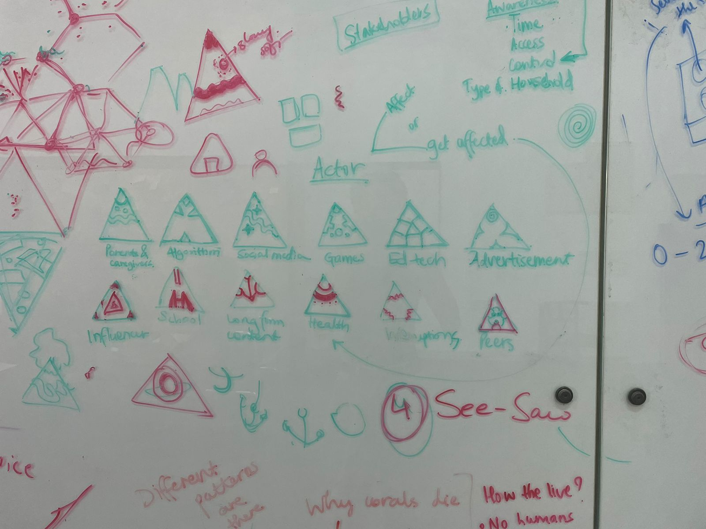
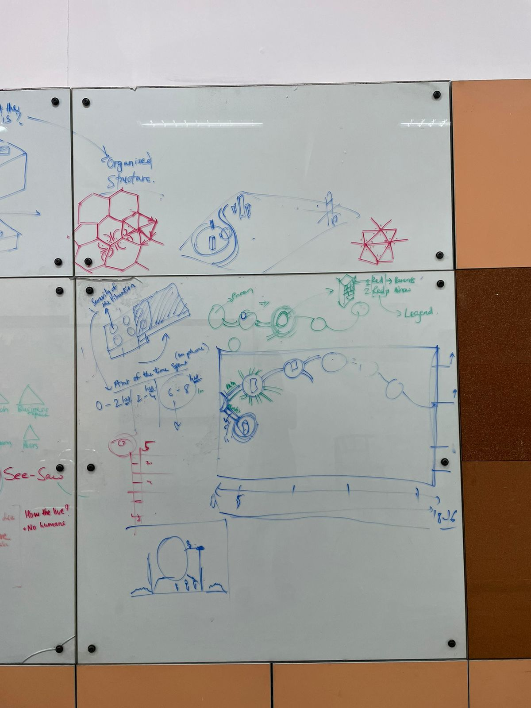
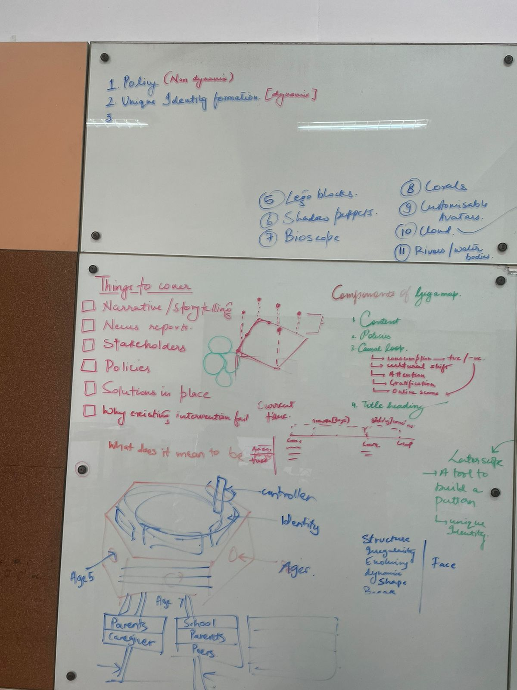
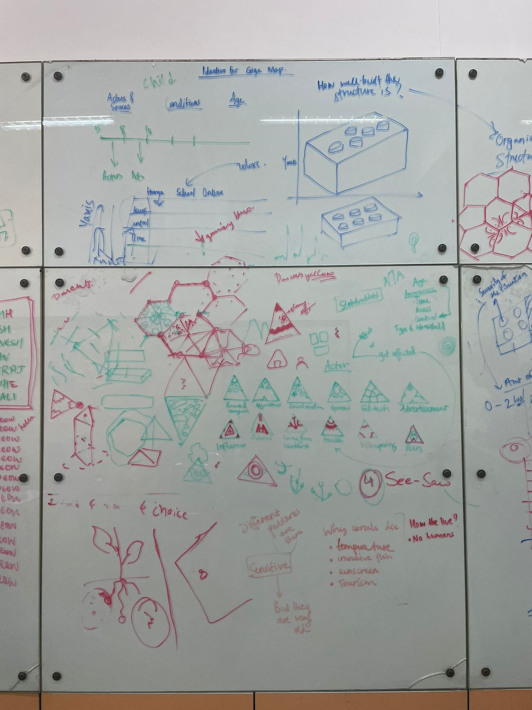

The Design
Process
How 7 students built a systems gigamap — from four open questions to a full causal loop diagram of Gen Alpha identity formation.
Four questions.
Three keywords.

What happened here
The team began with four open questions about what happens to identity, attention, and memory when digital systems replace human ones. These questions collapsed into three keywords — Identity · Attention · Memory — plus a fourth theme: abandonment of self due to technology.
Why it mattered
Starting with questions rather than a topic prevented premature closure. The keyword framework became the research assignment structure — each student took one domain.
Also visible
A generational spectrum mapping when each generation — from Silent Gen to Gen Beta — encountered transformational technology for the first time.
Every generation.
One comparison.

What happened here
Each generation was researched across the same four dimensions: identity, behavioural habits, abandonment, and memory. Gen Alpha, Gen Z, Millennials, Gen X, and Gen Beta — each mapped on its own board so comparisons could be drawn across time.
The finding
Gen Alpha is the first generation for whom digital infrastructure arrived before identity formation began. Every prior generation had a pre-digital self to start from. Gen Alpha does not.
The window that
cannot reopen.

Why Erikson
Erikson's model established the developmental stakes. Each stage must resolve before the next becomes possible. Stages 1–4 (Trust, Autonomy, Initiative, Industry) are the preconditions for Stage 5: Identity vs Role Confusion — which is exactly what the system disrupts.
The argument
Screen exposure at 10 months enters at Stage 1. By the time identity formation begins at Stage 5, stages 1 through 4 have already been compromised. The algorithm doesn't cause identity confusion. It arrives into the space the damage created.
Gen Alpha
and tech.

What this board covers
How parents use screens as behavioural tools. How the algorithm constructs identity before the child can. How social validation becomes the currency of existence. How educators and pediatricians lack the frameworks to respond.
Key data point
"Only 55.5% of current literature focuses directly on Gen Alpha, showing a massive 'guidance gap.'"
The Algorithmic Self thesis
Identity is no longer formed through relationships and lived experience — it is increasingly co-constructed by commercial systems that have no interest in the user's psychological development.
The loop with
our biases in it.

What this is
The first attempt at a causal loop diagram — built before the team had fully stress-tested the research. The loops are present, the actors are named, but the map carries the team's early assumptions about which forces dominate.
Why it's documented
Keeping the first version makes the evolution visible. The biases are named, not hidden. This is what the research looked like before it argued back.
Built on
the wall.

What changed
After stress-testing the first map against the research, the team rebuilt the loops. The caregiver cluster became more precise. The algorithm pipeline — Behaviour Classification, Vulnerability Targeting, Preference Reinforcement — was made explicit as a sequence, not just a node.
What stayed
The grandparent buffer remained the only named balancing loop. The reinforcing loops still dominated. The structural tilt hadn't changed — the research had just made it more legible.
The system
in full.

Finding the
right form.

What the team explored
Multiple visual forms for the actor icons: hexagons, triangles, organic shapes, connected networks. Each actor (Parents & Caregivers, Algorithm, Social Media, Games, Ed-Tech, Advertisement, School, Influencer, Long Form Content, Health, Interruptions, Peers) needed a distinct visual identity that could work at the scale of a gigamap.
The decision
The triangle — with unique internal patterns per actor — emerged from the whiteboard session as the form that could hold both specificity and scalability.
Fractured into
symmetry.

The metaphor
A kaleidoscope makes fragments look like a pattern. The child looks at the pattern and calls it a self. They cannot see the mirrors. They cannot see that the fragments were placed by someone else. The wholeness is optical.
The system in the metaphor
Beads → influences. Mirrors → those influences placed and erected by caregivers or the kids themselves. Fixed mirror → solution space. Broken mirrors → pop culture.
The title it produced
"Raised in Illusion" — the child sees a coherent self. The gigamap shows what assembled it.
12 actors.
12 triangles.

First sketches
Layout ideation
Structure decisionsRaised in
Illusion.